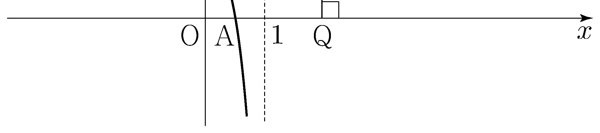
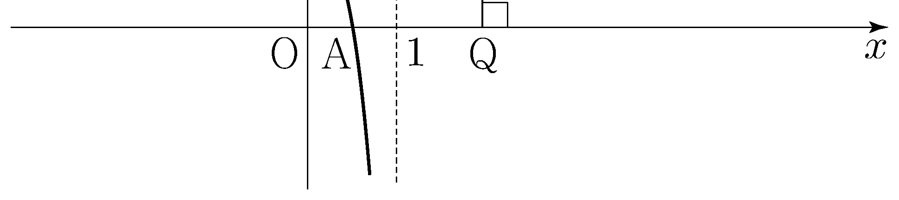

Let \(A\) and \(B\) be the image of \(f\) and \(f \circ f\) respectively.
If \(n(A) = 6\) then \(f\) is bijective, and \(f \circ f\) is also bijective, so \(n(B) = 6\).
If \(n(A) \leq 4\) then \(n(B) \leq 4\) since \(B \subseteq A\).
Therefore it should be that \(n(A) = 5\) and \(B = A\).
-
There are \((\alpha)\) ways to select a subset \(A\) of \(X\) where \(n(A) = 5\).
-
For \(A\) selected in (i), let \(k\) be the element of \(X\) that is not an element of \(A\).
Since \(n(A) = 5\), there are \((\beta)\) ways to select \(f(k)\) from \(A\).
-
For \(A=\{a_1,a_2,a_3,a_4,a_5\}\) selected in (i) and \(f(k)\) selected in (ii),
since \(f(k) \in A\) and \(A = B\), it should be that \(A=\{f(a_1),f(a_2),f(a_3),f(a_4),f(a_5)\}\).
The number of cases where this holds is equal to the number of bijections from \(A\) to \(A\), which is \((\gamma)\).
By (i), (ii) and (iii), the number of functions \(f\) to compute is
\((\alpha)\) \(\times\)
\((\beta)\) \(\times\)
\((\gamma)\).

 
